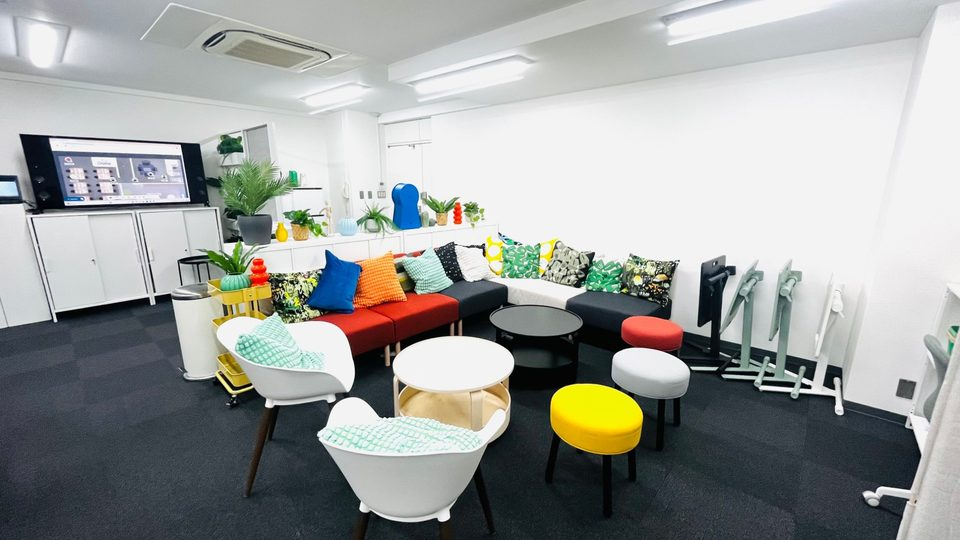
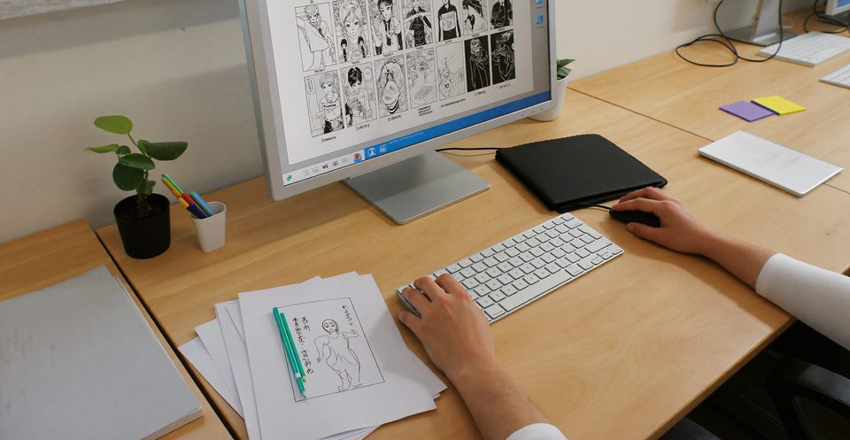
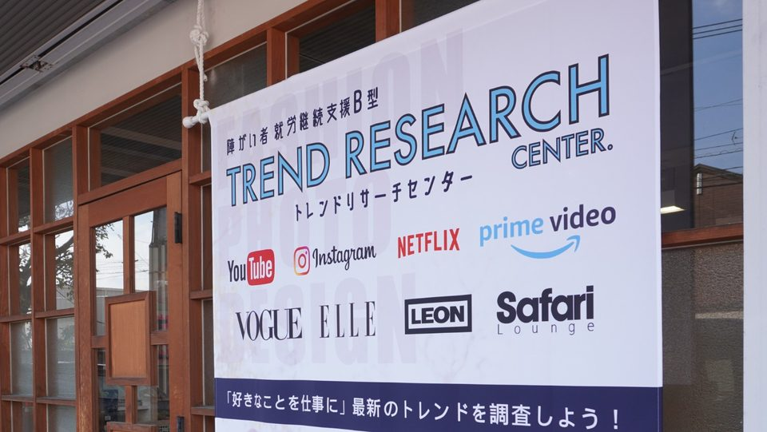

博多区
アイミー博多
カラフルなソファのある、明るいスペースです。
- 住所
- 〒812-0013
福岡県福岡市博多区博多駅東2丁目9-25
アバンダント84 301号
yours漫画制作・Kindle出版コース
見学・相談福岡市の就労継続支援B型

体調に波があって、決まった時間に働くのがこわい
働いていない期間が長くなって、何から始めればいいか分からない
何かを作って形に残したい。でも、一人だと続かない
その気持ちのままで大丈夫です。

決まった場所に通うことで、生活のリズムが少しずつ整います。送迎があるので、移動の負担も小さくできます。
話の流れを日本語で書けば、絵はAIで作れます。どの絵を使うかを選び、整えるのはあなたです。
企画から出版まで、やることが順番に決まっています。今日やることに迷いません。
日本語で1文を書くところから、漫画の1ページができるまでの流れです。
1日本語の1文を書く
雨の日、主人公が傘を忘れて駅で立ち止まる。
2AIで絵の候補を作り、選ぶ

いくつかの候補から、使う絵を選びます。
3セリフを入れて、ページが完成

※ 画像は見本です（利用者の作品へ差し替え予定）。

最初の1か月は、来られた日を一緒に喜ぶところから始めます。上手に描くことより、続けられる形を一緒に探します。
最初は週2日、1時間だけ。今は週○日通って、自分の本を作っています。
どんな本にするかを決める
AIを使って流れとセリフを考える
AIで絵を作り、使う絵を選ぶ
コマ割りとセリフ入れ
本の顔をつくる
Kindleで出版するための作業
自分が関わった本が、
Kindleで出版されます。
月2〜8万円（作業量・日数により個人差があります）。
ノルマはありません。
通う日が決まることで、
朝起きる理由ができます。
企画・構成・制作・出版までの一連の経験が、次の働き方の選択肢になります。
話の流れを日本語で書き、絵はAIで作って、選んで整える。表紙からページまで、1冊の本に仕上げます。


※ 画像は見本です。
※ 時刻は確認待ちの目安です。
通う日数も時間も、体調に合わせて決めます。
原則18歳以上で、次のいずれかに当てはまる方。
すぐに大きな収入を得たい方には、このコースは向いていません。
Step 1
フォームから60秒で予約
Step 2
作品と作業の様子を見て、費用や通い方を確認
Step 3
受給者証の申請や面談を、スタッフがお手伝いします
Step 4
通う日数と時間を決めて始めます
一般の会社への就職のほか、在宅での制作の仕事も選択肢の一つです。続けながら一緒に考えます。
利用料（自己負担）は、前年度の所得と住民税（市県民税）の課税状況によって決まります。対象となる所得は、ご本人と配偶者の分です。
月ごとの上限額があり、それ以上はかかりません（所得割16万円未満の世帯は月9,300円まで、それ以外は月37,200円まで）
ご自身がどれに当たるかは、見学の際に一緒に確認します。
はい。見学は60分ほどです。見学したから利用しなければいけない、ということはありません。
大丈夫です。絵はAIで作り、使う絵を選んで整えます。
スタッフが一つずつお伝えします。パソコンは事業所にあります。
いいえ。週何日、1日何時間かは、体調に合わせて決めます。
「費用について」をご覧ください。ご自身の区分は見学の際に一緒に確認します。
はい、ご一緒にどうぞ。
医師の診断などで利用できる場合があります。まずはご相談ください。
原則、期間の決まりはありません。継続には更新の手続きがあり、スタッフがお手伝いします。
利用開始の翌月から、毎月お支払いします。金額は作業量・日数によって変わります。

博多区
カラフルなソファのある、明るいスペースです。

早良区
木の格子の入口と、垂れ幕が目印です。
入力は60秒ほどです。こちらからメールかお電話でご連絡します。
LINEで質問だけすることもできます。LINEで質問する